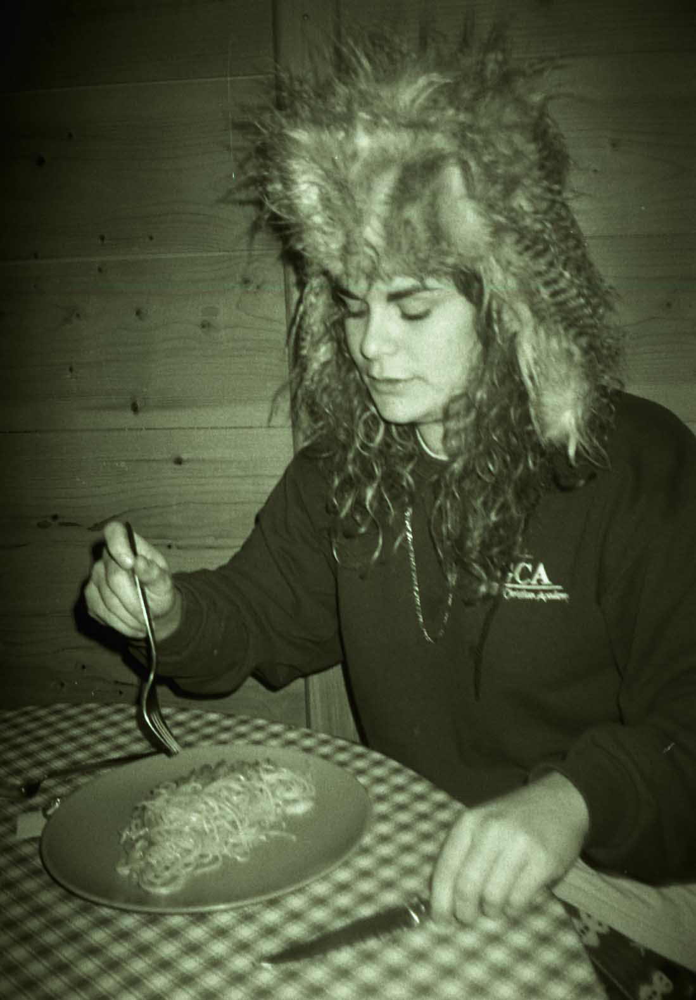

Curriculum Vitae

Full-time lecturer of Resident Advisor and part-time lecturer of GAMESCENES.
Produce multimedia installations with: videos, sounds and paintings
Currently, hosts a 2x monthly radio show on campusFM Toulouse
In recent years, mainly produces paintings and sometimes net art works.
Institute Superior of Art of Toulouse, isdaT, Toulouse
College of Art Michel Montaigne, Bordeaux III, Bordeaux
Solo Exhibitions // Shows // Installations
2019
Analog Room, live, Officina, Neukölln, Berlin
Sans Blabla, radio show, Campus FM, Toulouse
Sync System, radio show, UDON, Paris
2018
Outsider French People, live, isdaT, Toulouse
Sojbdor’s Receive, live, Forbiden Zone, Toulouse
2016
Enigmatique III, installations of drawings, Mediatheque, Hinx
Enigmatique II, live and installations of drawings, curated by Mathilde Nab, Le Synopsis, Bordeaux
Limbs, installations of drawings and projection, Le Cafe Vintage, Bordeaux
Enigmatique, FIFIB International Independent Film Festival, Michel Montaigne, Bordeaux
Group Exhibitions // Shows // Installations
2019
L’Ere du Porn, installation of canvas, drawings, photographs, sculpture and projections, Galerie du quai, Toulouse
Les Mims, installation, canvas, installation of a senography, loop videos, live, isdaT, Toulouse
Tchao Lenaz, live, curated by Julia Castel, Curupia, Toulouse
Night of the cinema, GIRL SQUARE, projections, Olympe de Gouges, Toulouse
Sojbdor & Orque, radio Show, curated by Night Nurse : Midnight Fantasy, Toulouse
HIER UND JETZT video, curated by Léa Lascaud, KIT: Exhibition Space, artist run space, Toulouse
Premiere Presse, Brozar Exp, editions of drawings, and drawings, curated by Louise Turner, Cartoucherie, Toulouse
A4 +, installations of Posters, curated by Folle Beton, L’annexe, Paris
24 Carats, live, Ensad, Paris
Student Festival, GIRL SQUARE, projection, La Forêt électrique, Toulouse
2018
Piece Montee, GIRL SQUARE, projections, curated by Jean Pierre Castex and Patric Mellet, Augustine Museum & Jose Cabanis Library, Toulouse
Eglusha & CessFess, live and installation, curated by Lea Lascaud, KIT: Exhibition Space, Toulouse
Before Oceanique, live, installation of a scenography, isdaT, Toulouse
Galex, live, Experimental galerie, Toulouse
Tonerre, live and installations of a scenography, curated by Jon Hanoun and Gregoir Buffier, Le dadA, Toulouse
Boum of the Arena, Dj Set, Aparte, bar Brozar, Toulouse
Les Dominicales d’Aparte, live and installation of a scenography, La Maison, Toulouse
Apotheose, Dj set with LARESS, curated by Aparte, Le Cri de la Mouette, Toulouse
Adieu Monde de Merde, installation, Isdat, Toulouse
Laress Party, with TT, Illyes El Habchi, Kubu, Victor Duzelier, Beco Beurre, Yves Bartlett, Oranj, Jan Loup, live, dj set, Toulouse
Les Croisees Creatives, live and installation of a scenography, curated by Aparte, Le DadA, Toulouse
Laresparc Before After, with Clément Chalm, Patrice Gogue, live, Forbiden Zone, Toulouse
L'Ombre de la Mouche, live, Nébuleuse, Toulouse
Publications and texts
2019
N°14, Place à ... Charlène Levasseur, Roven, contemporary art drawing magazine, text by Johana Carrier and Marine Pages and Roven, Les Presses du Reel
2018
Pièce Montee, Le Point Contemporain, text by Valérie Toubas and Daniel Guionnet
2016
Les Estudiantines, interview from Lise Taris and Dorian Falconnet
Les Encres Oniriques, interview from François Lesparre
Workshops
2019
Ich? The copier, creation of posters, Klaus Merkel, Amandine Rue, Emmanuelle Castellan
Razzle Dazzle #4, I assist but I create nothing, Jean Baptiste Sauvage, Emmanuelle Castellan, Herve Sernant, Valerie Du Chene
2018
Primitive fiction, performance, living art, movie, Cesar Vayssie, Serge Provost, Yves Caro
2017
Le geste d’ecouter, about the limit of the sound : Silence and Noise, the Voice of eco: I have nothing to say and I am saying it, listening (not through but) to technology. Soundscape or Ambient Music: with open absent-minded ears, Lluis Nacenta
2016
Faute au copieur, create an engine able to reproduce a work own is own, Gaelle Sandre
Faire avec, create without money, Lucie Chaumont
info